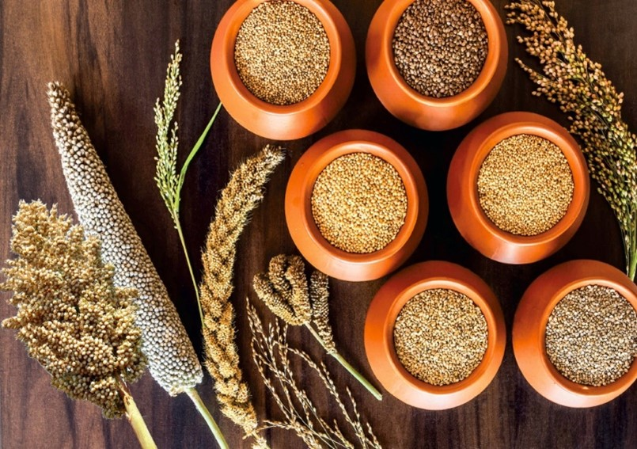
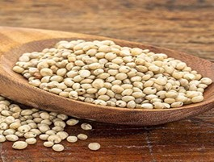
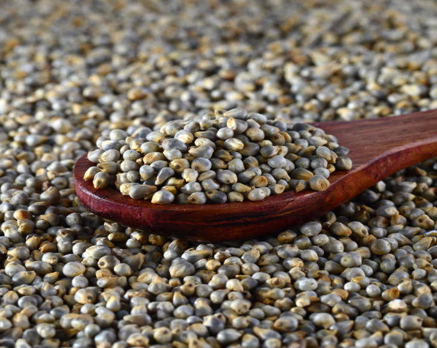

Milets
Millets are a group of small-seeded grasses that are grown around the world as cereal crops or grains for fodder and human food. They are starchy grains that are rich in carbs and contain several vitamins and minerals. One cup (174 grams) of cooked millet contains 207 calories and 41 grams of carbs.
Types of Milets
Sorghum Millet (Jowar)
Sorghum millet, also known as great millet, is a grass species cultivated for its grain. The scientific name for sorghum millet is Sorghum bicolor.
It is also known as Broomcorn, Guinea corn, Durra, Imphee, Jowar, Milo, Cholam, Jonna, Kaoliang, Shallu.
It is a staple crop for millions of semi-arid residents. It is especially valued in hot and arid regions for its resistance to drought and heat.
It is a nutrient-packed grain that is rich in vitamins and minerals like B vitamins, magnesium, potassium, phosphorus, iron, and zinc. It's also an excellent source of fiber, antioxidants, and protein.
Sorghum is a crop from the Gramineae family that is high in carbohydrates and has the scientific name Sorghum bicolor L. It is one of the staple crops for millions of semi-arid residents, is also known as “The KING OF MILLETS'.
Pearl Millet (Bajra)
Pearl millet(Cenchrus americanus, commonly known as the synonym Pennisetum glaucum), also known as bajra, is a cereal crop and the most widely grown type of millet. Its scientific name is Pennisetum glaucum
It is cultivated in arid and semiarid areas. It is used as a fodder crop for cattle, and its grains are used for chicken feed.
It is a nutritious and easy to digest cereal grain. It is non-glutinous, making it a healthy option for people with a gluten allergy and celiac disease.
It millet has its origins in West Africa, where the oldest finds in Mauritania date to 1000 BC. It is primarily cultivated in sub-Saharan Africa.
It is the most widely grown type of millet. It has been grown in Africa and the Indian subcontinent since prehistoric times. The center of diversity, and suggested area of domestication, for the crop is in the Sahel zone of West Africa.[2] Recent archaeobotanical research has confirmed the presence of domesticated pearl millet on the Sahel zone of northern Mali between 2500 and 2000 BC.[3][4] 2023 is the International Year of Millets, declared by the United Nations General Assembly in 2021.